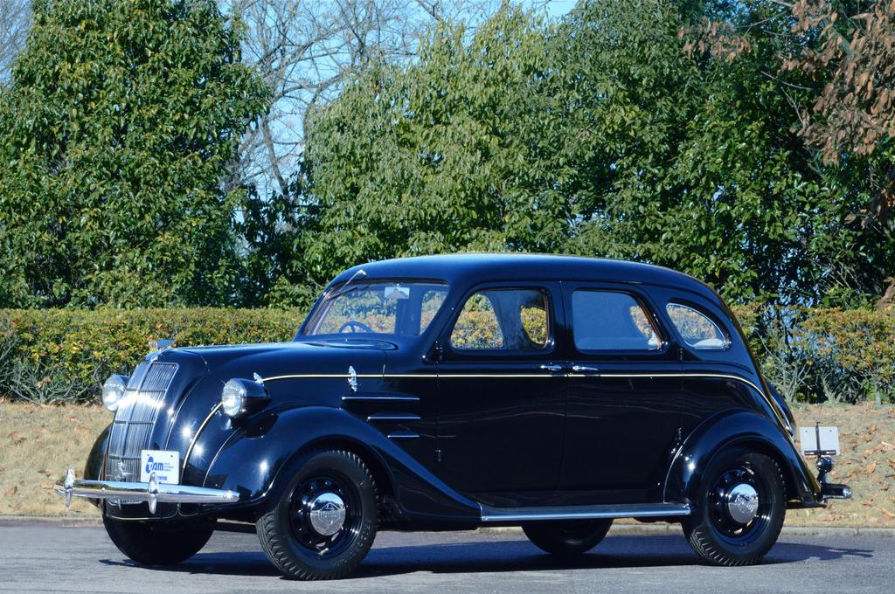
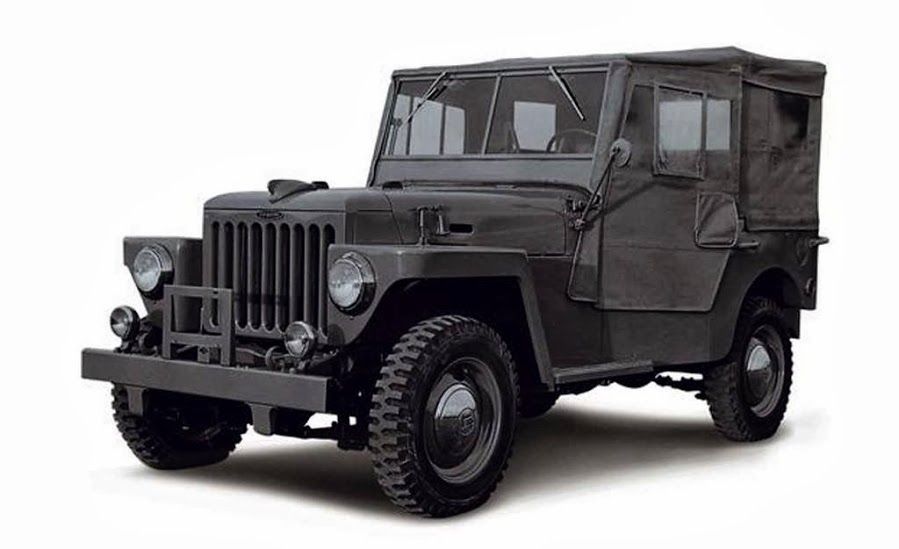
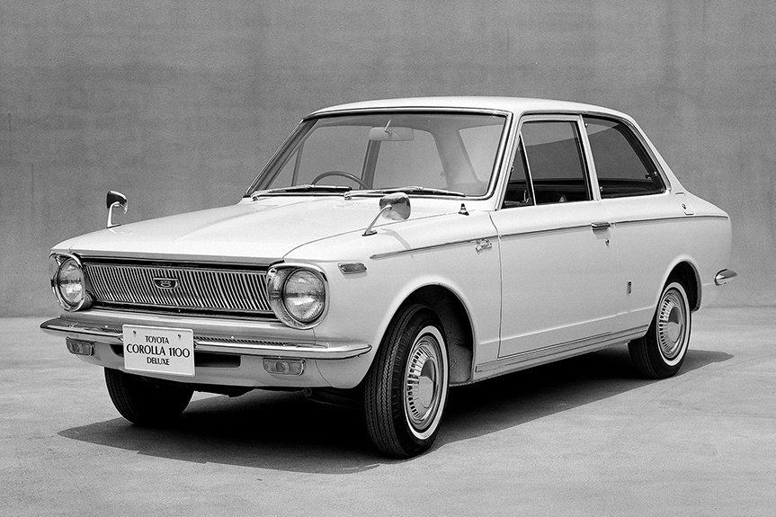
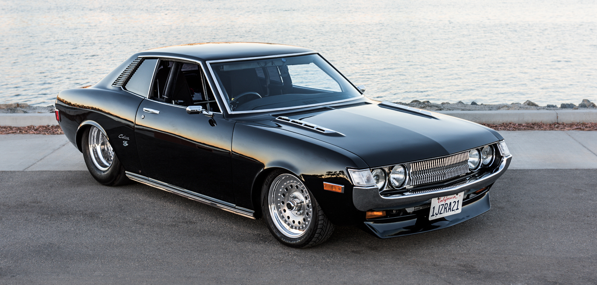
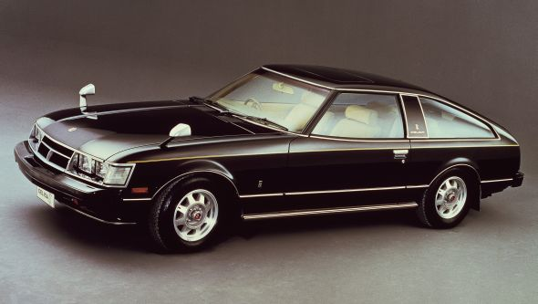
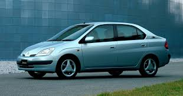
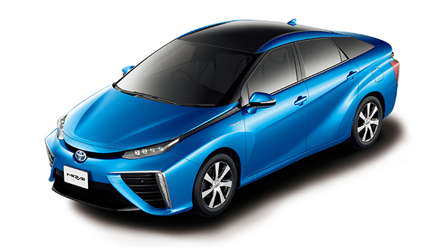

Informações Gerais da Toyota
Fundador: Kiichiro Toyoda
Ano de fundação: 1937
Sede: Toyota City, Japão
Património aproximado: 250 bilhões USD (2023)
Numero de funcionários: Mais de 370.000(2023)
Principais áreas de actuação: Automóveis, veículos comerciais, robótica, pesquisa em energia limpa
Modelos mais vendidos: Corolla, Camry, Hilux, RAV4
Missão: Criar carros seguros, confiáveis e sustentáveis para melhorar a mobilidade global
Visão: Liderar o futuro da mobilidade e tecnologias verdes
Toyota Curiosities
Toyota AA (1936)
Primeiro carro produzido pela Toyota. Inspirado em modelos americanos, tinha um design simples e motor básico. Representa o início da marca no mundo automóvel Este modelo abriu caminho para todo crescimento da marca no futuro.

Land Cruiser (1951)
SUV extremamente resistente, criado para uso militar e terrenos difíceis. Ficou famoso mundialmente pela sua durabilidade e confiabilidade, senso usado até hoje em regiões rurais e desertos e regiões remotas de todo o mundo.

Corolla (1966)
O Toyota Corolla e o carro mais vendido da história. Foi criado para ser acessível, económico e confortável. Ao longo dos anos, evoluiu bastante, mas manteve a sua reputação de durabilidade e baixo custo de manutenção. Tornou-se um símbolo global da Toyota e e usado por milhões de pessoas em todo o mundo.

Celica (1970)
O Celica foi um dos primeiros carros esportivos acessíveis da Toyota. Com um design moderno e jovem, trouxe mais emoção e estilo para a marca. Foi muito popular entre os jovens e ajudou a Toyota e entrar no mercado de carros esportivos de forma forte.

Supra (1978)
O Toyota Supra e um dos carros esportivos mais icónicos da marca. Conhecido pelo seu motor potente e excelente desempenho, ganhou fama mundial, especialmente na cultura de corridas e tuning. Até hoje, e considerado um dos carros Japoneses mais lendários.

Prius (1997)
O Prius foi o primeiro carro híbrido produzido em massa no mundo. Ele combina um motor a gasolina com um motor eléctrico, reduzindo o consumo de combustível e a poluição. Este modelo revolucionou a indústria automóvel e abriu caminho para os carros ecológicos modernos.

Mirai (2014)
O Toyota Mirai e um carro movido a hidrogénio, uma tecnologia inovadora que produz apenas vapor de água como emissão. Representa o futuro da mobilidade sustentável e mostra compromisso da Toyota com soluções ecológicas.
